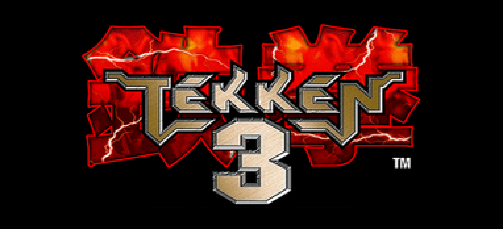

Street Fighter II: The World Warrior[b] is a 2D fighting game developed by Capcom and originally released for arcades in 1991.
It is the second installment in the Street Fighter series and the sequel to 1987's Street Fighter.
It is Capcom's fourteenth game to use the CP System arcade system board. Street Fighter II vastly
improved many of the concepts introduced in the first game,
including the use of special command-based moves,
a combo system, a six-button configuration, and a wider selection of playable characters, each with a unique fighting style.

Tekken 2[b] is a fighting game developed and published by Namco.
The second entry in the Tekken series, it was released for arcades in 1995,
and ported to the PlayStation the following year.
The arcade version was later released in Tekken 5 Arcade History mode for the PlayStation 2.
Contra[a] is a run and gun video game developed and published by Konami,
originally developed as a coin-operated arcade video game in 1986[5][6] and released on February 20, 1987.
[7][8] A home version was released for the Nintendo Entertainment System in 1988,
along with ports for various home computer formats, including the MSX2.
The arcade and computer versions were localized as Gryzor in Europe,
and the NES version as Probotector in PAL regions and France.
Super Mario[a] (also known as Super Mario Bros.[b] and Mario[c]) is a platform game series created by Nintendo starring their mascot, Mario. It is the central series of the greater Mario franchise. At least one Super Mario game has been released for every major Nintendo video game console. However, there have also been a number of Super Mario video games released on non-Nintendo gaming platforms.[1] There are more than 20 games in the series.
The Legend of Zelda[a] is an action-adventure game franchise created by the Japanese game designers Shigeru Miyamoto and Takashi Tezuka. It is primarily developed and published by Nintendo, although some portable installments and re-releases have been outsourced to Flagship, Vanpool, and Grezzo. Its gameplay incorporates action-adventure and elements of action RPG games.


 Contra[a] is a run and gun video game developed and published by Konami,
originally developed as a coin-operated arcade video game in 1986[5][6] and released on February 20, 1987.
[7][8] A home version was released for the Nintendo Entertainment System in 1988,
along with ports for various home computer formats, including the MSX2.
The arcade and computer versions were localized as Gryzor in Europe,
and the NES version as Probotector in PAL regions and France.
Contra[a] is a run and gun video game developed and published by Konami,
originally developed as a coin-operated arcade video game in 1986[5][6] and released on February 20, 1987.
[7][8] A home version was released for the Nintendo Entertainment System in 1988,
along with ports for various home computer formats, including the MSX2.
The arcade and computer versions were localized as Gryzor in Europe,
and the NES version as Probotector in PAL regions and France.
 Super Mario[a] (also known as Super Mario Bros.[b] and Mario[c]) is a platform game series created by Nintendo starring their mascot, Mario. It is the central series of the greater Mario franchise. At least one Super Mario game has been released for every major Nintendo video game console. However, there have also been a number of Super Mario video games released on non-Nintendo gaming platforms.[1] There are more than 20 games in the series.
Super Mario[a] (also known as Super Mario Bros.[b] and Mario[c]) is a platform game series created by Nintendo starring their mascot, Mario. It is the central series of the greater Mario franchise. At least one Super Mario game has been released for every major Nintendo video game console. However, there have also been a number of Super Mario video games released on non-Nintendo gaming platforms.[1] There are more than 20 games in the series.